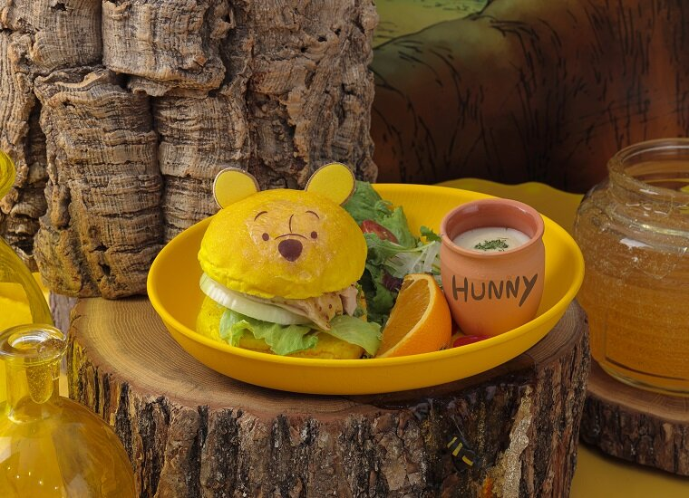
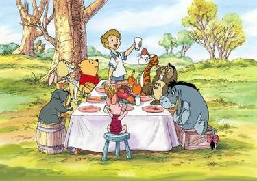

Café

Venez prendre un café et vous détendre chez Winnie l'Ourson. Nous offrons également un menu complet thématique. 
Nous en avons pour tout les goûts! Le menu complet a été assemblé avec toutes les restrictions alimentaires possibles en tête. Nous avons des options sans gluten, vegane, sans ou peu de sodium, halal, etc. Faites-nous part de vos demandes!
Boutique de souvenirs

Bienvenue dans notre boutique de souvenirs! Nous offrons des cadeaux qui plairont aux petits et grands, allant des vêtements au peluches en passant par les ustensiles de cuisine. Nous sommes confiants que vous y trouverez un trésor pour tous un chaqun.

Notre boutique de souvenirs est située près du service à la clientèle, devant le sentier Pot-de-Miel.
Themed Picnics
Avez-vous toujours rêvé d'avoir un pique-nique comme Winnie l'Ourson et ses amis? Voici votre chance! Une multitude de tables de pique-nique sont présentes sur nos sentiers pour votre usage.

Chaque table est équipée d'une nappe ainsi que de peluches Winnie l'Ourson, afin que vous puissiez vraiment partager votre pique-nique avec Winnie et ses amis!